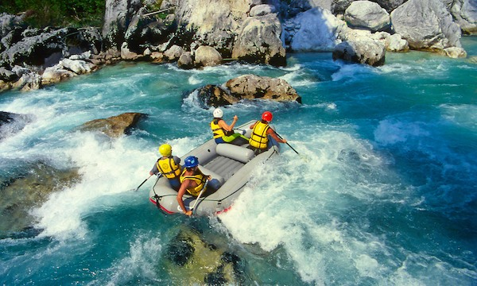
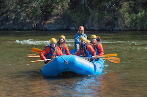
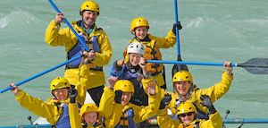
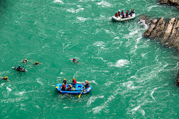
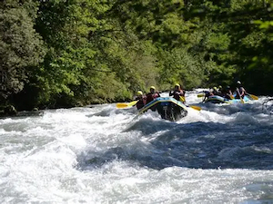
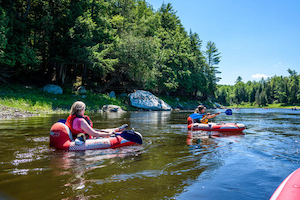
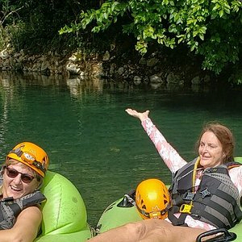
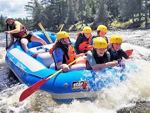
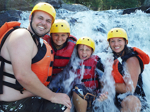
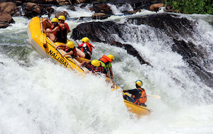

Explore Our Rafting Trips
Ready for your next adventure?
Contact us today to reserve your spot.
Explore The Variety Of Trips Available
Beginner Rapids

Gentle Waters

Family-friendly

2-3 hour experience
Perfect for first-time rafters and families, the Beginner Rapids trip offers a safe and exciting introduction to white water rafting. Enjoy gentle rapids, beautiful river scenery, and guidance from experienced instructors as you build confidence on the water. No previous rafting experience is required, making this adventure ideal for all ages. Come one, come all!
Intermediate Challenge

Moderate trips

Great for groups

Half-day Adventure
Ready to take your rafting skills to the next level? The Intermediate Challenge features faster currents and more exciting rapids, providing the perfect balance of adventure and control. Guided by experienced river experts, you'll navigate thrilling sections of the river while enjoying breathtaking scenery along the way.
Extreme Expedition

Advanced Trips

Full-day Experience

Experienced Rafters
Built for thrill-seekers and experienced rafters, the Extreme Expedition delivers the ultimate white water adventure. Tackle powerful rapids, navigate challenging river sections, and experience the rush of fast-moving water under the guidance of expert rafting leaders. This action-packed journey offers unforgettable excitement for those ready to test their skills and courage.